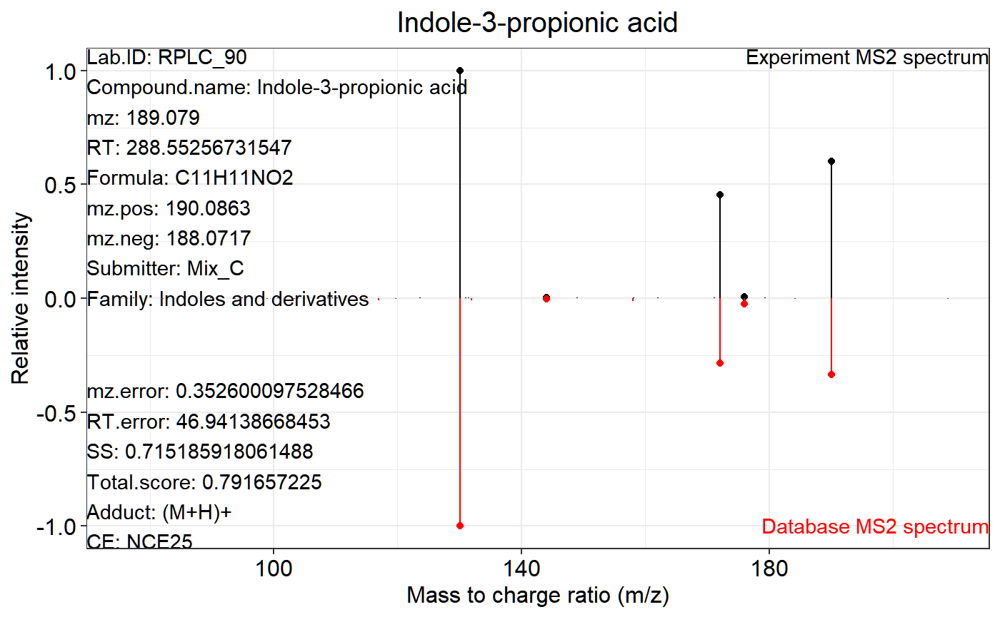

Annotate metabolites according to MS2 database using metID
Xiaotao Shen (https://www.shenxt.info/)
Si Wu
School of Medicine, Stanford University2020-02-06
Source:vignettes/metabolite_annotation_using_MS2.Rmd
metabolite_annotation_using_MS2.RmdMS1 data preparation
The peak table must contain “name” (peak name), “mz” (mass to charge ratio) and “rt” (retention time, unit is second). It can be from any data processing software (XCMS, MS-DIAL and so on).
MS2 data preparation
The raw MS2 data from DDA or DIA should be transfered to msp, mgf or mzXML format files. You can use ProteoWizard software.
Data organization
Place the MS1 peak table, MS2 data and database which you want to use in one folder like below figure shows:

Run metIdentify2() function
We can use the demo data from demoData package to show how to use it. Here, we use the in-house database from Michael Snyder lab (msDatabase_rplc0.0.2).
Demo data preparation
library(tidyverse)
library(metID)
path <- system.file("ms2_identification_demo_data1", package = "demoData")
file.copy(from = path, to = ".", overwrite = TRUE, recursive = TRUE)
#> [1] TRUE
new.path <- file.path("./ms2_identification_demo_data1")
data("msDatabase_rplc0.0.2", package = "metID")
save(msDatabase_rplc0.0.2, file = file.path(new.path, "msDatabase_rplc0.0.2"))You must put the database in the same folder with MS1 peak table and MS2 data.
Annotation
ms2.data <- grep(pattern = "mgf", dir(new.path), value = TRUE)
result <- metIdentify2(ms1.data = "ms1.peak.table.csv", ##csv format
ms2.data = ms2.data,##only msp and mgf and mz(X)ML are supported
ms1.ms2.match.mz.tol = 25,
ms1.ms2.match.rt.tol = 10,
ms1.match.ppm = 25,
ms2.match.tol = 0.4,
fraction.weight = 0.3,
dp.forward.weight = 0.6,
dp.reverse.weight = 0.1,
rt.match.tol = 60,
polarity = "positive",
ce = "all",
column = "rp",
ms1.match.weight = 0.25,
rt.match.weight = 0.25,
ms2.match.weight = 0.5,
path = new.path,
total.score.tol = 0,
candidate.num = 3,
database = "msDatabase_rplc0.0.2",
threads = 3)
#> Use old data
#> Matching peak table with MS2 spectrum...
#> 1096 out of 22193 peaks have MS2 spectra.
#> Selecting the most intense MS2 spectrum for each peak...OK
#> You use all CE values.
#>
#> Identifing metabolites with MS/MS database...
#>
|
| | 0%
|
|======================= | 33%
|
|=============================================== | 67%
|
|======================================================================| 100%
#>
#> All done.The argument of metIdentify() can be found here metIdentify().
ms1.data: The MS1 peak table name. It must be the “csv” format.
ms2.data: The MS2 data name. It can be msp, mgf or mzXML format.
ms1.ms2.match.mz.tol: The m/z tolerance for MS1 peak and MS2 spectrum match. Default is 25 ppm.
ms1.ms2.match.rt.tol: The RT tolerance for MS1 peak and MS2 spectrum match. Default is 10 s.
ms1.match.ppm: The m/z tolerance for peak and database metabolite match.
ms2.match.tol: The MS2 similarity tolerance for peak and database metabolite match. The MS2 similarity refers to the algorithm from MS-DIAl. So if you want to know more information about it, please read this publication.
\[MS2\;Simlarity\;Score\;(SS) = Fragment\;fraction*Weight_{fraction} + Dot\;product(forward) * Weight_{dp.reverse}+Dot\;product(reverse)*Weight_{dp.reverse}\]
- fraction.weight: The weight for fragment match fraction.
\[Fragment\;match\;fraction = \dfrac{Match\;fragement\;number}{All\;fragment\;number}\]
dp.forward.weight: The weight for dot product (forward)
dp.forward.weight: The weight for dot product (forward)
\[Dot\;product = \dfrac{\sum(wA_{act.}wA_{lib})^2}{\sum(wA_{act.})^2\sum(wA_{lib})^2}with\;w =1/(1+\dfrac{A}{\sum(A-0.5)})\]
result is metIdentifyClass object. You can print it out to see the identificaiton information.
result
#> --------------metID version-----------
#> 0.3.0
#> -----------Identifications------------
#> (Use getIdentificationTable to get identification table)
#> There are 22193 peaks
#> 1096 peaks have MS2 spectra
#> There are 73 metabolites are identified
#> There are 56 peaks with identification
#> -----------Parameters------------
#> (Use getParams to get all the parameters of this processing)
#> Polarity: positive
#> Collision energy: all
#> database: msDatabase_rplc0.0.1
#> Total score cutoff: 0
#> Column: rp
#> Adduct table:
#> (M+H)+;(M+H-H2O)+;(M+H-2H2O)+;(M+NH4)+;(M+Na)+;(M-H+2Na)+;(M-2H+3Na)+;(M+K)+;(M-H+2K)+;(M-2H+3K)+;(M+CH3CN+H)+;(M+CH3CN+Na)+;(2M+H)+;(2M+NH4)+;(2M+Na)+;(2M+K)+;(M+HCOO+2H)+In-house database The in-house database in our lab were provided, with RPLC and HILIC mode RT information. They were acquired using Thermo Fisher QE-plus. However, the LC system may be different with your experiments, so if you want to use our in-house database for metabolite identification, please set
rt.match.tolas 100000000(no limitation). The in-house database can be downloaded in my github.
Extracxt all the processing arguments
You can get processsing parameters from the annotation result (metIdentifyClass object).
parameters <- getParams(object = result)
parameters
#> # A tibble: 17 x 3
#> Parameter Meaning Value
#> <chr> <chr> <chr>
#> 1 ms1.ms2.match.mz~ MS1 features & MS spectra matching m~ 25
#> 2 ms1.ms2.match.rt~ MS1 features & MS spectra matching R~ 10
#> 3 ms1.match.ppm MS1 match tolerance (ppm) 25
#> 4 ms2.match.ppm MS2 fragment match tolerance (ppm) 30
#> 5 ms2.match.tol MS2 match tolerance 0.4
#> 6 rt.match.tol RT match tolerance (s) 60
#> 7 polarity Polarity positive
#> 8 ce Collision energy all
#> 9 column Column rp
#> 10 ms1.match.weight MS1 match weight 0.25
#> 11 rt.match.weight RT match weight 0.25
#> 12 ms2.match.weight MS2 match weight 0.5
#> 13 path Work directory ./ms2_identification~
#> 14 total.score.tol Total score tolerance 0
#> 15 candidate.num Candidate number 3
#> 16 database MS2 database msDatabase_rplc0.0.1
#> 17 threads Thread number 3Extracxt the identification table
You can also get the identification table from it.
identification.table1 <- getIdentificationTable(object = result,
candidate.num = 3,
type = "old")
identification.table1 %>%
filter(!is.na(Identification))
#> # A tibble: 56 x 6
#> name mz rt MS2.spectrum.name Candidate.number Identification
#> <chr> <dbl> <dbl> <chr> <dbl> <chr>
#> 1 pRPLC~ 190. 336. mz190.08644104003~ 1 Compound.name:Indole-~
#> 2 pRPLC~ 526. 649. mz526.29294342759~ 1 Compound.name:LysoPE(~
#> 3 pRPLC~ 321. 652. mz321.24005126953~ 1 Compound.name:C20:4,O~
#> 4 pRPLC~ 548. 692. mz548.37107890314~ 1 Compound.name:1,2-DID~
#> 5 pRPLC~ 502. 648. mz502.29299926757~ 1 Compound.name:LysoPE(~
#> 6 pRPLC~ 167. 510. mz167.07038879394~ 1 Compound.name:3-(2-HY~
#> 7 pRPLC~ 363. 446. mz363.21661938489~ 1 Compound.name:Cortiso~
#> 8 pRPLC~ 162. 33.7 mz162.11244215767~ 1 Compound.name:L-Carni~
#> 9 pRPLC~ 162. 47.9 mz162.05841580753~ 1 Compound.name:S-Allyl~
#> 10 pRPLC~ 100. 108. mz100.07563781738~ 2 Compound.name:2-Piper~
#> # ... with 46 more rowsYou can also set the type as “new” to get the different type of identification table.
identification.table1 <- getIdentificationTable(object = result,
candidate.num = 3,
type = "new")
identification.table1 %>%
filter(!is.na(Compound.name))
#> # A tibble: 96 x 17
#> name mz rt Compound.name CAS.ID HMDB.ID KEGG.ID Lab.ID Adduct mz.error
#> <chr> <chr> <chr> <chr> <chr> <chr> <chr> <chr> <chr> <chr>
#> 1 pRPL~ 190.~ " 33~ Indole-3-pro~ <NA> <NA> <NA> RPLC_~ (M+H)+ 0.35260~
#> 2 pRPL~ 526.~ " 64~ LysoPE(22:6) <NA> HMDB11~ <NA> RPLC_~ (M+H)+ 2.03010~
#> 3 pRPL~ 321.~ " 65~ C20:4,OH FA(~ <NA> <NA> <NA> RPLC_~ (M+H)+ 7.18432~
#> 4 pRPL~ 548.~ " 69~ 1,2-DIDECANO~ <NA> <NA> <NA> RPLC_~ (M+H-~ 0.03447~
#> 5 pRPL~ 502.~ " 64~ LysoPE(20:4) <NA> HMDB11~ <NA> RPLC_~ (M+H)+ 1.64100~
#> 6 pRPL~ 167.~ " 50~ 3-(2-HYDROXY~ <NA> <NA> <NA> RPLC_~ (M+H)+ 0.22198~
#> 7 pRPL~ 363.~ " 44~ Cortisol 50-23~ HMDB00~ C00735 RPLC_~ (M+H)+ 4.11096~
#> 8 pRPL~ 162.~ " 3~ L-Carnitine 541-1~ HMDB00~ C00318 RPLC_~ (M+H)+ 1.66789~
#> 9 pRPL~ 162.~ " 4~ S-Allylcyste~ 21593~ HMDB34~ C16759 RPLC_~ (M+H)+ 1.85201~
#> 10 pRPL~ 100.~ " 10~ 2-Piperidino~ <NA> HMDB11~ <NA> RPLC_~ (M+H)+ 1.40704~
#> # ... with 86 more rows, and 7 more variables: mz.match.score <chr>,
#> # RT.error <chr>, RT.match.score <chr>, CE <chr>, SS <chr>,
#> # Total.score <chr>, Database <chr>Filter
You can use filterIden() function to filer identification results from the metIdentifyClass object according to m/z error, rt error, MS2 spectra similarity and total score.
result.new <-
filterIden(object = result, ms1.match.ppm = 10)
result.new
#> --------------metID version-----------
#> 0.3.0
#> -----------Identifications------------
#> (Use getIdentificationTable to get identification table)
#> There are 22193 peaks
#> 1096 peaks have MS2 spectra
#> There are 30 metabolites are identified
#> There are 21 peaks with identification
#> -----------Parameters------------
#> (Use getParams to get all the parameters of this processing)
#> Polarity: positive
#> Collision energy: all
#> database: msDatabase_rplc0.0.1
#> Total score cutoff: 0.5
#> Column: rp
#> Adduct table:
#> (M+H)+;(M+H-H2O)+;(M+H-2H2O)+;(M+NH4)+;(M+Na)+;(M-H+2Na)+;(M-2H+3Na)+;(M+K)+;(M-H+2K)+;(M-2H+3K)+;(M+CH3CN+H)+;(M+CH3CN+Na)+;(2M+H)+;(2M+NH4)+;(2M+Na)+;(2M+K)+;(M+HCOO+2H)+
result
#> --------------metID version-----------
#> 0.3.0
#> -----------Identifications------------
#> (Use getIdentificationTable to get identification table)
#> There are 22193 peaks
#> 1096 peaks have MS2 spectra
#> There are 73 metabolites are identified
#> There are 56 peaks with identification
#> -----------Parameters------------
#> (Use getParams to get all the parameters of this processing)
#> Polarity: positive
#> Collision energy: all
#> database: msDatabase_rplc0.0.1
#> Total score cutoff: 0
#> Column: rp
#> Adduct table:
#> (M+H)+;(M+H-H2O)+;(M+H-2H2O)+;(M+NH4)+;(M+Na)+;(M-H+2Na)+;(M-2H+3Na)+;(M+K)+;(M-H+2K)+;(M-2H+3K)+;(M+CH3CN+H)+;(M+CH3CN+Na)+;(2M+H)+;(2M+NH4)+;(2M+Na)+;(2M+K)+;(M+HCOO+2H)+MS2 spectra match plot output
You can also use ms2plot() function to output the MS2 specra match plot for one, multiple or all peaks.
Output one MS2 spectra match plot.
##which peaks have identification
peak.name <- whichHasIden(object = result)
head(peak.name)
#> MS1.peak.name MS2.spectra.name
#> 1 pRPLC_125 mz190.086441040039rt335.493954
#> 2 pRPLC_285 mz526.292943427598rt642.48804
#> 3 pRPLC_287 mz321.240051269531rt654.50772
#> 4 pRPLC_417 mz548.37107890314rt693.06558
#> 5 pRPLC_430 mz502.292999267578rt641.79102
#> 6 pRPLC_479 mz167.070388793945rt511.339296
ms2.plot1 <- ms2plot(object = result,
database = msDatabase_rplc0.0.2,
which.peak = peak.name[1,1])
ms2.plot1
You can also output interactive MS2 spectra match plot by setting
interaction.plotas TRUE.
##which peaks have identification
ms2.plot2 <- ms2plot(object = result,
database = msDatabase_rplc0.0.2,
which.peak = peak.name[1,1],
interaction.plot = TRUE)
ms2.plot2You can output all MS2 spectra match plots by setting
which.peakas “all”.
ms2plot(
object = result,
database = msDatabase_rplc0.0.2,
which.peak = "all",
path = file.path(new.path, "inhouse"),
threads = 4
)Then all the MS2 spectra match plots will be output in the “inhouse” folder.